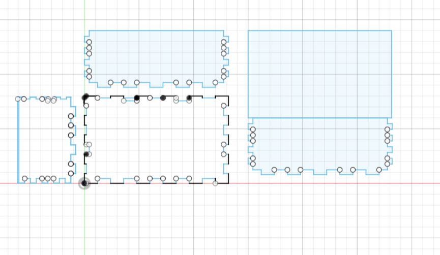
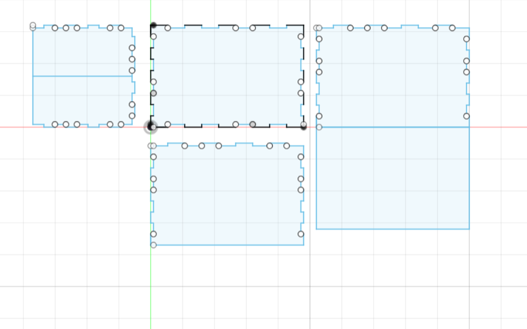

<div class="textcontainer">
<p class="margin"> </p>
<h3>Week 2: 2D Design & Cutting</h3>
<p class="margin"> </p>
<div class="flexrow">
<a id="btn" href="./week2.zip" download>Download my CAD files from this week!
</a>
</div>
<p class="margin"> </p>
<h4>Assignment 1: Box</h4>
The goal of this assignment was to make a box... and boy did I ever. The basic idea I had for the design was to use fingers cut out of the sides of the box to connect the base and four walls, and then I would have one the fourth wall a scored section that could fold over the top and act as the lid for the box.
<p class="margin"> </p>
<div class="flexrow">
<img src="./box_closed.jpeg" alt="geometric diagrams drawn in chalk on a blackboard">
</div>
<p class="caption">A box... my box in fact.</p>
It took me awhile to actually get to the laser cutter, both because I was really busy this week and also because my design process in fusion 360 was... iterative to say the least. The first time I tried making and arranging all the cuts I'd need to make, I did this weird combination of parameterizing things and just inputting values. This turned out to be not a smart idea. When it came time to cut, I tried changing one parameter to make the size a little more realistic and the entire thing got messed up.
<p class="margin"> </p>
<div class="flexrow">

</div>
<p class="caption">One example of a failed design... I changed on thing and the whole thing went crazy...</p>
There we honestly a couple more attempts before I landed on an honestly airtight design. What I did differently was parameterize literally everything, and then every single dimension was written as an equation of the parameters. This made me able to use the calipers to measure the depth of the cardboard and account for the teeth that would stick into any side to make a design that fit together perfectly.
<p class="margin"> </p>
<div class="flexrow">

</div>
<p class="caption">This was the design I actually cut out.</p>
Cutting it was a breeze thanks to Bobby's help. He definitely had to hold my hand through the process, but look at how nice he looked next to my finished cuts!
<p class="margin"> </p>
<div class="flexrow">
<img src="./bobby_with_cuts.jpeg" alt="3 kinds of circular cardboard tiles on a table.">
<img src="./box_cuts_irl.jpeg" alt="a laser cutter cutting an array of circular tiles out of cardboard." width="50%">
</div>
<p class="caption">Bobby!</p>
Putting the box together wasn't too hard... just hot glue and prayers. In the end, I think it came out pretty well! It is definitely a box!
<p class="margin"> </p>
<div class="flexrow">
<img src="./box_open.jpeg" alt="two cardboard sculptures that look kind of like people.">
</div>